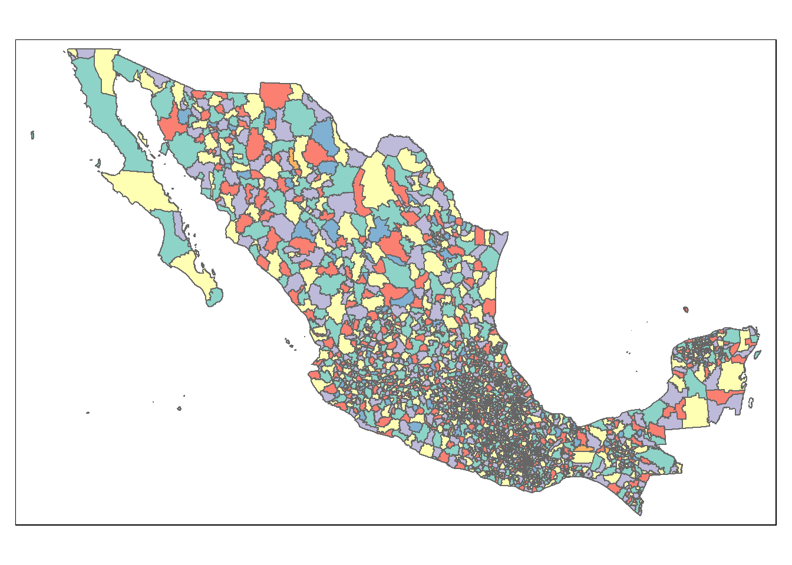
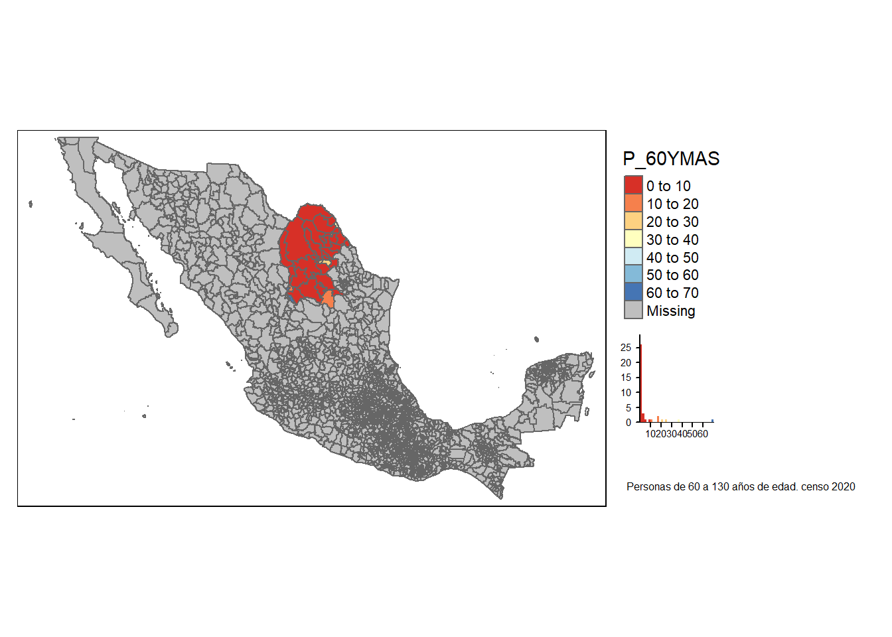
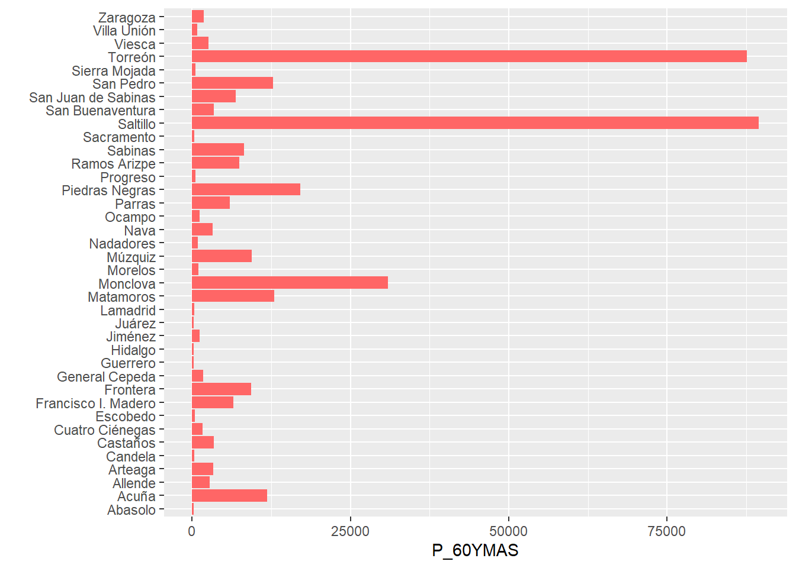
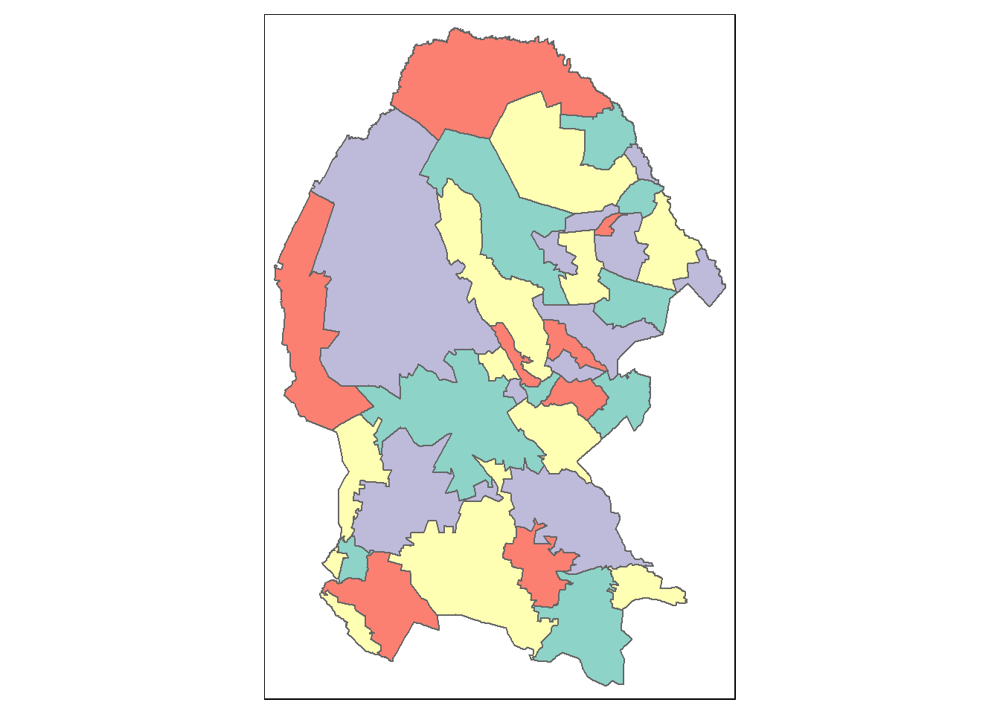
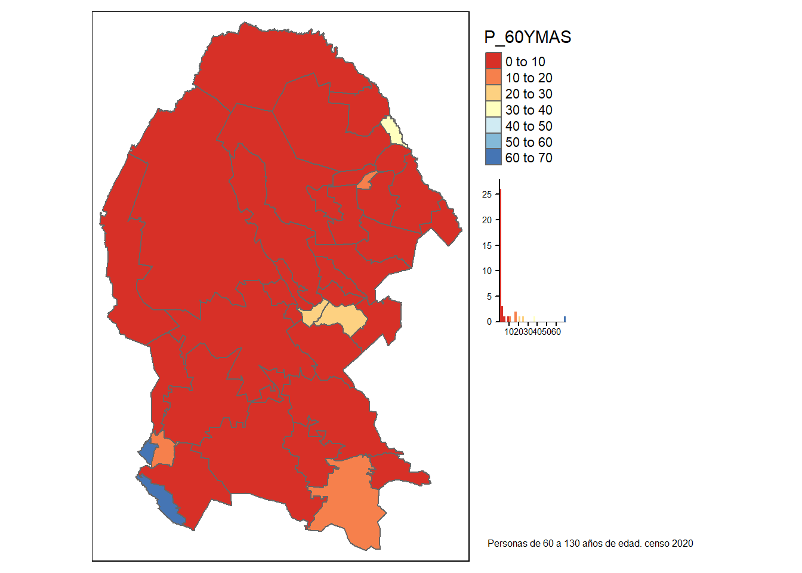

Capítulo 4 Variable cartografiada por entidad
El siguiente texto ejemplifica la ejecución del código seleccionando la variable que se quiere estudiar
Los parámetros se seleccionan en la ejecución cómo se muestra en el video final
’— title: “Variable cartografiada por entidad”
author: “Claudia Guerrero S”
date: “17/02/2021”
output: html_document: df_print: paged pdf_document: default
params:
’#=======================#
’# Render Function: #
’#=======================#
estilo: label: “Estilo” value: jenks input: select choices: ’[pretty,equal,quantile,sd,kmeans,jenks,fisher]
varname: label: “Variable” value: P_60YMAS input: select choices: [POBTOT,POBFEM,POBMAS,P_0A2,P_0A2_F,P_0A2_M,P_3YMAS,P_3YMAS_F,P_3YMAS_M,P_5YMAS,P_5YMAS_F,P_5YMAS_M,P_12YMAS]
entidad: label: “Entidad Federativa” value: Coahuila de Zaragoza input: select choices: [Aguascalientes,Baja California,Baja California Sur,Campeche,Coahuila de Zaragoza,Colima,Chiapas,Chihuahua,Ciudad de México,Durango,Guanajuato,Guerrero,Hidalgo,Jalisco,México,Michoacán de Ocampo,Morelos,Nayarit,Nuevo León,Oaxaca,Puebla,Querétaro,Quintana Roo,San Luis Potosí,Sinaloa,Sonora,Tabasco,Tamaulipas,Tlaxcala,Veracruz de Ignacio de la Llave,Yucatán,Zacatecas]
’—
4.1 Datos cartográficos nivel municipal
Marco Geoestadístico. Censo de Población y Vivienda 2020 2020 2.65 GB https://inegi.org.mx/contenidos/productos//prod_serv/contenidos/espanol/bvinegi/productos/geografia/marcogeo/889463807469_s.zip
Ficha de información https://inegi.org.mx/app/biblioteca/ficha.html?upc=889463807469
Se descarga y se descomprime localmente Se crea una carpeta para los datos geográficos
#La ruta para el mapa de México se toma del Marcogeostadístico nacional
rutam<-"D:/Documents/Claudia/Midropbox/Investigacion y escritos/Marcogeoestadisticonacional/mg_sep2019_integrado/conjunto_de_datos"
basemapan <- readOGR(rutam,"00mun", use_iconv = TRUE, encoding = "latin1")## OGR data source with driver: ESRI Shapefile
## Source: "D:\Documents\Claudia\Midropbox\Investigacion y escritos\Marcogeoestadisticonacional\mg_sep2019_integrado\conjunto_de_datos", layer: "00mun"
## with 2465 features
## It has 4 fieldstm_shape(basemapan) +
tm_polygons(col = "MAP_COLORS",
minimize = TRUE)
#La ruta para el archivo que tiene las variables censales y su descripción
#rutvar<-"D:/Documents/Claudia/Midropbox/Investigacion y escritos"
#variablescensales<-read.csv(paste0(rutvar,"/Censo2020/","variablescensales.csv"),header=TRUE, sep=",",encoding="UTF-8")
## Importación de datos cartográficos4.2 Importación de datos censales
En el sitio del INEGI se encuentran los resultados del CENSO 2020 para cada una de las entidades de la población https://www.inegi.org.mx/programas/ccpv/2020/default.html#Datos_abiertos
Principales resultados por localidad (ITER)
Estados Unidos Mexicanos 2020
https://www.inegi.org.mx/contenidos/programas/ccpv/2020/datosabiertos/iter/iter_00_cpv2020_csv.zip
Para recuperar los datos censales a nivel estatal:
En el archivo se registra la población total de la entidad cuando en el nombre de la localidad aparece la leyenda “Total de la Entidad”
#url<-paste0("https://www.inegi.org.mx/contenidos/programas/ccpv/2020/datosabiertos/iter/iter_00_cpv2020_csv.zip")
#temp <- tempfile()
#temp2 <- tempfile()
#download.file(url, temp)
#unzip(zipfile = temp, exdir = temp2)
#rut<-file.path(temp2)
#censonal<- read.csv(paste0(rut,"/","conjunto_de_datos/conjunto_de_datos_iter_00CSV20.csv"),header=TRUE, sep=",",encoding="UTF-8")
censonal<-censonalo
names(censonal)[1] <- "CVE_ENT"
#Datos de toda la entidad uso del campo nom_loc para identificar los valores de las variables a nivel estatal
latmx="México"
codent<-substr(censonal$CVE_ENT,1,2)
codent<-sprintf("%02d%s", as.numeric(gsub("[^0-9]+", "", codent)), gsub("[0-9]+", "", codent))
codmun<-substr(censonal$MUN,1,3)
codmun<-sprintf("%03d%s", as.numeric(gsub("[^0-9]+", "", codmun)), gsub("[0-9]+", "", codent))
censonal$CVEGEO<-paste0(codent,codmun)
censonal <-subset(censonal,censonal$NOM_ENT %in% c(params$entidad))
censonal <-subset(censonal,censonal$NOM_LOC %in% c("Total del Municipio"))
#Ahora el mapa tiene el dato de las 198 variables del censo
#Conversión a número
cols = c(11:231)
censonal[,cols] %<>% lapply(function(x) as.integer(as.character(x)))
basemapa<-merge(basemapan,censonal,by="CVEGEO", all.x =TRUE) 4.3 Variables en la entidad,mapa nacional
tmap_mode("plot")
desc<-case_when(
params$estilo == "pretty" ~ "El estilo pretty redondea y divide en números enteros siempre que sea posible y los espacia uniformemente. \n \n ",
params$estilo == "equal" ~ "El estilo equal divide los valores en rangos de igual ancho \n \n ",
params$estilo == "quantile" ~ "El estilo quantile crea rangos con un igual número de poligonos (estados) \n \n ",
params$estilo == "sd" ~ "El estilo sd calcula la desviación estándar de la variable y la usa como valor para el ancho de los rangos. \n \n ",
params$estilo == "kmeans" ~ "El estilo kmeans utiliza la media de la variable y la usa como valor para el ancho de los rangos. \n \n ",
params$estilo == "jenks" ~ "El estilo jenks identifica grupos de valores similares y maximiza la diferencia entre categorías. \n \n ",
params$estilo == "fisher" ~ "El estilo fisher crea grupos con la máxima homogeneidad \n \n ")
#glue(" \n## ",params$varname," \n \n ") %>% cat()
glue(params$varname," \n \n ") %>% cat()P_60YMAS
varindi<-variablescensales[variablescensales$mnemonico == params$varname, "indicador"]
vardesc<-variablescensales[variablescensales$mnemonico == params$varname, "descripcion"]
glue::glue (" {varindi} \n\n") %>% cat()Población de 60 años y más
glue("\n\n") ## one newline glue::glue (" {desc} \n\n") %>% cat()El estilo pretty redondea y divide en números enteros siempre que sea posible y los espacia uniformemente.
mapi<-tm_shape(basemapa) +
tm_fill(params$varname,title=params$varname,legend.hist=TRUE ,n = 8,id="NOM_MUN",palette="RdYlBu",style=params$estilo,convert2density = TRUE) +
tm_borders()+
tm_layout(legend.outside = TRUE, legend.outside.position = "right")+
tm_layout(title = paste0({vardesc}, " censo 2020"), title.size = 0.5, title.position = c("right","bottom"))
mapi 
basic.stats <- function(dset, vars){
for(i in 1:length(vars)){
print(vars[i])
gg<-ggplot(data=dset, aes(x = dset$NOM_MUN, y = dset[[vars[i]]])) + coord_flip()+
geom_bar(stat="identity", fill = "#FF6666") +
ylab(params$varname) +
xlab("")
print(gg)
glue(" \n## "," \n \n \n ") %>% cat()
glue(" \n## "," \n \n \n ") %>% cat()
print(summary(dset[[vars[i]]]))
glue(" \n## "," \n \n \n ") %>% cat()
glue(" \n## "," \n \n \n ") %>% cat()
print(quantile(dset[[vars[i]]],c(0,.01,.1,.5,.9,.99,1)))
glue(" \n## "," \n \n ") %>% cat()
}
}
basic.stats(censonal, c(params$varname))[1] “P_60YMAS” ##
##
Min. 1st Qu. Median Mean 3rd Qu. Max. 201.0 618.5 2669.5 9172.0 7966.5 89453.0 ##
##
0% 1% 10% 50% 90% 99% 100% 201.00 209.88 295.10 2669.50 14211.30 88746.30 89453.00 ##
tmap_mode("plot")4.4 Mapa de la entidad
Se creó un archivo con la información del nombre del archivo para cade entidad, este archivo se llama y el contenido lo podemos tener en la tabla geoentidades Y así la base del mapa será el de la entidad
rutamc<-"D:/Documents/Claudia/Midropbox/Investigacion y escritos/Censo2020/"
geoentidades<-read.csv(paste0(rutamc,"marcogeoentidad.csv"),header=TRUE, sep=",",encoding="UTF-8")
glue("\n\n") ## one newlinehead(geoentidades,1)NUM_ENT NOM_ENT minent COD_ENT ARCHENT 1 1 Aguascalientes aguascalientes 1 01_aguascalientes
glue("\n\n") ## one newlinerutamc<-"D:/Documents/Claudia/Midropbox/Investigacion y escritos/Censo2020/889463807469_s"
codent<-substr(geoentidades$NUM_ENT,1,2)
codent<-sprintf("%02d%s", as.numeric(gsub("[^0-9]+", "", codent)), gsub("[0-9]+", "", codent))
geoentidades$COD_ENT<-codent
geoentidades <-subset(geoentidades,geoentidades$NOM_ENT %in% c(params$entidad))
rutamc<-"D:/Documents/Claudia/Midropbox/Investigacion y escritos/Censo2020/889463807469_s/"
filename<-geoentidades$ARCHENT
filemun<-paste0(geoentidades$COD_ENT,"mun")
url<-paste0(rutamc,filename,".zip")
temp2 <- tempfile()
unzip(url, exdir = temp2)
rut<-file.path(temp2)
rutamun<-paste0(rut,"/conjunto_de_datos")
glue("\n\n") ## one newlinebasemapan <- readOGR(rutamun,filemun, use_iconv = TRUE, encoding = "latin1")OGR data source with driver: ESRI Shapefile Source: "C:.Guerrero1d3842ba17b4_de_datos“, layer:”05mun" with 38 features It has 4 fields
tm_shape(basemapan) +
tm_polygons(col = "MAP_COLORS",
minimize = TRUE)
#La ruta para el archivo que tiene las variables censales y su descripción
rutvar<-"D:/Documents/Claudia/Midropbox/Investigacion y escritos"
variablescensales<-read.csv(paste0(rutvar,"/Censo2020/","variablescensales.csv"),header=TRUE, sep=",",encoding="UTF-8")
censonal<-censonalo
names(censonal)[1] <- "CVE_ENT"
#Datos de toda la entidad uso del campo nom_loc para identificar los valores de las variables a nivel estatal
latmx="México"
codent<-substr(censonal$CVE_ENT,1,2)
codent<-sprintf("%02d%s", as.numeric(gsub("[^0-9]+", "", codent)), gsub("[0-9]+", "", codent))
codmun<-substr(censonal$MUN,1,3)
codmun<-sprintf("%03d%s", as.numeric(gsub("[^0-9]+", "", codmun)), gsub("[0-9]+", "", codent))
censonal$CVEGEO<-paste0(codent,codmun)
censonal <-subset(censonal,censonal$NOM_ENT %in% c(params$entidad))
censonal <-subset(censonal,censonal$NOM_LOC %in% c("Total del Municipio"))
#Ahora el mapa tiene el dato de las 198 variables del censo
#Conversión a número
cols = c(11:231)
censonal[,cols] %<>% lapply(function(x) as.integer(as.character(x)))
basemapa<-merge(basemapan,censonal,by="CVEGEO", all.x =TRUE) 4.5 Variables en el mapa de la entidad
P_60YMAS Población de 60 años y más
El estilo pretty redondea y divide en números enteros siempre que sea posible y los espacia uniformemente.
[1] “P_60YMAS” ##
##
Min. 1st Qu. Median Mean 3rd Qu. Max. 201.0 618.5 2669.5 9172.0 7966.5 89453.0 ##
##
0% 1% 10% 50% 90% 99% 100% 201.00 209.88 295.10 2669.50 14211.30 88746.30 89453.00 ##
4.6 Video
Este proceso se detalla en el siguiente video